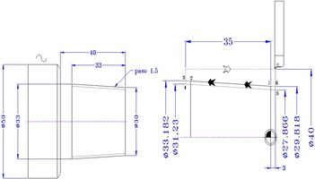

En el control FAGOR, te remito a la definición del ciclo fijo G86 que se usa ambientan en el caso de roscas cónicas.
MCN02 PROGRAMACION DE TORNO CNC
3.8.7 Roscas cónicas.
Ejemplo de roscas cónicas en FANUC:
 Se quiere mecanizar la roca cónica de figura.
{kind=link}
Si se da una longitud de 2 mm antes de la entrada y 2 a la salida. Las coordenadas de los puntos son:
- Punto 1 → X30 Z0
- Punto 2 → X33 Z-33
- Punto 3 → X[33+2*3/33=33.182] Z-35 → X del punto P2 + los 2 mm en Z por la proporción de diámetros 3/33
- Punto 4 X[33+2*3/33-2*0,65*1,5=31,232] Z-35 → X del punto P3 - 2 * 0,65 * paso
- Punto 6 X[30-2*3/33=29,818] Z2 → X del punto P1 - los 2 mm en Z por la proporción de diámetros 3/33
- Punto 5 X X[30-2*3/33-2*065*1,5=27,868] Z2 → X del punto P6 - 2 * 0,65 * paso
| % O2010 G55 T0101 G92 S2500 G96 F0.25 S180 M04 G40 G00 X52 Z0 G01 X-1 G00 Z3 X53 G71 U1.5 R0.2 G71 P210 Q290 U1 W0.15 N210 G00 X29.82 Z3 (P6) G01 X33 Z-35 (p3) Z-40 X46 N290 A135 X51 G42 G70 P210 Q290 F0.1 S380 G00 X55 G28 W0 T0707 G97 S555 M04 G00 G40 X40 Z2 (pos.inicial) G76 P011000 Q80 R0.04 G76 X31.23 Z-35 R-1.68 P975 Q300 F1.5 (XZ P4...R=p6-p3) G28W0 M30 % |
Recomendación
G92 Ciclo de pasada de roscado con reposicionamiento:
 Cuando se desea optimizar el tallado de roscas se limita el numero de
pasadas y profundidad a las indicadas por el fabricante de la placa.
Cuando se desea optimizar el tallado de roscas se limita el numero de
pasadas y profundidad a las indicadas por el fabricante de la placa.
En este caso el programador necesita una función que sincronice el giro del cabezal con el paso de la rosca de manera precisa.
El ciclo fijo además de realizar esta sincronización reposiciona la
herramienta en el punto de partida de la herramienta anterior a la
pasada de roscado, y además repite la pasada para los diámetros
indicados en sucesivos bloques después del bloque G92.El formato de la
función es:
| N100 G00 X[] Z[] N110 G92 X[] Z[] R[] F[] N120 X[] N130 X[] N140 X[] N150 G00 X[] Z[] |
X Cota X del fondo de la pasada. Z Cota Z de la pasada. R Diferencia en radios entre punto inicial y final. F Paso de la rosca. |
Los ciclos fijos de pasada única se programan en un solo bloque y
son modales, se desactivan con una función del grupo 0. En el bloque
N110 del formato anterior se programa el ciclo que se repite en los
bloque N120, N130, N140 para distintas profundidades, en el bloque N150
se anula el ciclo fijo con un G00.
El parámetro R es opcional, el la mayoría de las ocasiones se mecanizan
roscas cilíndricas por lo que R toma valor nulo, o simplemente no se
programa. Cuando existe cono R toma valor negativo cuando el diámetro
aumenta el la dirección de avance de la pasada (Caso de la figura de
arriba), y cuando el diámetro en dirección de la pasada disminuye R
toma valor positivo.
En la figura los movimientos de trabajo en los cuales se realiza la
sincronización de ejes se indican en fecha llena, y los
posicionamientos en flecha vacía.
Ejemplo de programación de una rosca cilíndrica.
Para la rosca M44x1.25 el fabricante de la plaquita recomienda 6
pasadas a unas profundidades radiales de 0.20, 0.17, 0.14, 0.11, 0.10,
0.08
En la tabla siguiente se calcula el diámetro en cada pasada.
|
Número de pasada |
Prof. radial incremental |
Profundidad radial acumulada |
Diámetro del fondo de la pasada. X [mm] |
|
1 |
0.20 |
0.20 |
43.60 |
|
2 |
0.17 |
0.37 |
43.26 |
|
3 |
0.14 |
0.51 |
42.98 |
|
4 |
0.11 |
0.62 |
42.76 |
|
5 |
0.10 |
0.72 |
42.56 |
|
6 |
0.08 |
0.80 |
42.40 |
El programa es:
 G50 S2220
G50 S2220
N100 T0303 (PERFIL)
N105 G96 F0.3 S222 M04
N115 G40 G00 X52 Z0
N120 G01 X-2
N125 G00 Z2
N130 X36
N135 G01 X44 Z-2
N140 Z-46
N145 X41 Z-50
N150 Z-60
N155 X46
N160 A135 X52
N165 G00 G28 U0 W0
N200 T0909 (ROSCADO)
N205 G97 S777 M03
N210 G40 G00 X46 Z2
N215 G92 X43.6 Z-50 F1.25
N220 X43.26
N225 X42.98
N230 X42.76
N235 X42.56
N240 X42.40
N245 G00 G28 U0 W0
N250 M30
Un error típico es programar los bloque N220 a N240 como si se tratase de un movimiento con la función G01 o con G00.
Ejemplo de programación de una rosca cónica.
 Si la Z última programada en el ciclo G92 es de 46 el diámetro final
coincide con la rosca cilíndrica, y las profundidades sucesivas
también. Pero si se desea que la herramienta de roscar libre tanto al
empezar la pasada (por ejemplo en Z1) con al terminar la pasada de
roscado (por ejemplo en Z-50), la R y los diámetros de la pasadas deben
de calcularse.
Si la Z última programada en el ciclo G92 es de 46 el diámetro final
coincide con la rosca cilíndrica, y las profundidades sucesivas
también. Pero si se desea que la herramienta de roscar libre tanto al
empezar la pasada (por ejemplo en Z1) con al terminar la pasada de
roscado (por ejemplo en Z-50), la R y los diámetros de la pasadas deben
de calcularse.
Si en un recorrido de 46 mm en Z R toma valor de 7 mm (en la figura 887
se deduce este valor de la operación 44/2-30/2), para un recorrido 51
mm (de Z1 a Z-50) la R toma el valor proporcional, su calculo es
7/46∗51 resultando R7.76, la R se programa en signo negativo porque el
la dirección de la pasada de roscado el cono aumenta de diámetro.
El diámetro de partida en Z-50 se calcula aplicando la proporción del
cono en radios: 7/46 que es el aumento del radio por unidad de
recorrido en el eje Z, entonces para Z-50 el diámetro es:
30+2∗(7/46∗50)=45.22 mm.
Si para este diámetro de calcula la tabla de los diámetros de cada pasada resulta:
|
Número de pasada |
Prof. radial incremental |
Profundidad ∅ acumulada |
Diámetro del fondo de la pasada. X [mm] |
|
1 |
0.20 |
0.40 |
45.22-0.40=44.82 |
|
2 |
0.17 |
0.74 |
45.22-0.74=44.48 |
|
3 |
0.14 |
1.02 |
45.22-1.02=44.20 |
|
4 |
0.11 |
1.24 |
45.22-1.24=43.98 |
|
5 |
0.10 |
1.44 |
45.22-1.44=43.78 |
|
6 |
0.08 |
1.60 |
45.22-1.60=43.62 |
Programa:
G50 S2220
G40 G00 G28 U0 W0
N100 T0303 (PERFIL)
N105 G96 F0.3 S320 M04
N115 G40 G00 X52 Z0
N120 G01 X-2
N125 G00 Z2
N130 X52
N135 G71 U2 R0.5
N140 G71 P145 Q175 U0.5 W0.2
N145 G00 X30
N150 G01 Z0
N155 Z-46 X44
N160 X41 Z-50
N165 Z-60
N170 X48
N175 A135 X51
N180 G42 G70 P145 Q175
N190 G40 G00 G28 U0 W0
N200 T0909 (ROSCADO)
N205 G97 S777 M03
N210 G40 G00 X46 Z1
N215 G92 X44.82 Z-50 R-7.76 F1.25
N220 X44.48
N220 X44.20
N220 X43.98
N220 X43.78
N220 X43.62
N245 G00 G28 U0 W0
N250 M30